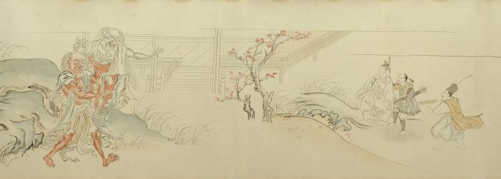

源頼光が渡辺綱と共に斬った化物を探して洞窟に入り、身代わりの人形を盾にして2匹の化物と対峙する。
出典：親書誌：U426_nichibunken_0056：土蜘蛛草紙；ツチグモソウシ／日付：2007／資源識別子：U426_nichibunken_0056_0005_0000
Copyright (c)2010- International Research Center for Japanese Studies, Kyoto, Japan. All rights reserved.